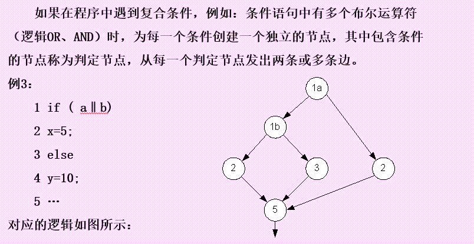

软件测试的定义
三个角度：需求、寻找错误、质量保证
- IEEE 在1983年将软件测试定义为“使用人工或自动手段运行或测定某个系统的过程，其目的在于检验它是否满足规定的需求或是弄清预期结果与实际结果之间的差别”，该定义明确地提出了软件测试以检验是否满足需求为目标。
- Myers则认为软件测试“是为了发现错误而执行程序的过程”，明确提出了“寻找错误”是测试目的
- 从软件质量保证的角度看，软件测试是一种重要的软件质量保证活动，其动机是通过一些经济、高效的方法，捕捉软件中的错误，从而达到保证软件内在质量的目的
软件测试是一个在可控环境中执行软件的过程，目的就是为了验证软件是否按照预期运行
软件测试生命周期
引入程序错误阶段：需求规格说明、设计、编码阶段
通过测试发现错误阶段
清除程序错误阶段：缺陷分类、缺陷隔离、解决缺陷
- 结束每个阶段时都要进行严格的技术审查和管理复审

软件开发与测试模型
软件开发与测试V模型
- V模型左边下降的部分为开发过程各阶段：需求分析、设计、编码
- V模型右边上升的部分为测试过程的各个阶段：单元测试、集成测试、确认测试、系统测试
单元测试的目的：根据详细设计说明书来验证和确认每个单元模块是否符合预期的要求，发现编码过程中可能存在的各种错误
集成测试的目的：根据概要设计来验证和确认各个模块是否已正确集成到一起，主要是检查各单元与其它模块之间的接口上可能存在的错误
确认测试的目的：根据需求分析来验证和确认软件是否符合用户的预期要求。
系统测试的目的：根据需求定义，验证和确认系统作为一个整体是否能够正常有效地运行 。

软件开发与测试W模型
- W测试伴随整个软件开发周期，测试的对象不仅仅时程序还包括需求和设计
- 优点：每个软件开发活动结束后就可以执行相应的测试，如：在需求分析结束后，就可以进行需求分析测试

软件开发与测试H模型
与前两种模型相比，H模型充分地体现了测试过程,演示了在整个生产周期中, 某个(测试) 层次上的一次测试“微循环”(可以看作是一个流程在时间上的最小构成单位)
H模型揭示了：
- 软件测试不仅仅指测试的执行，还包括很多其他的活动
- 软件测试是一个独立的流程，贯穿产品的整个开发周期，与其他流程并发进行
- 软件测试要尽早准备、尽早执行
- 软件测试根据被测物的不同时分层次的。不同层次的测试活动可以是按照某个次序先后进行的，但也可能是反复的

软件测试相关术语
错误
程序员在编写代码时会出错，我们把这种错误称之为bug。随着开发过程的进行，错误会不断的放大
缺陷
缺陷是错误的结果或表现。缺陷可以分为过错缺陷和遗漏缺陷。
- 过错缺陷：把某些信息输入到了不正确的表现方式中
- 遗漏缺陷：没有输入正确的信息
tips：遗漏缺陷更难检查和解决，但通常评审常常可以找出遗漏缺陷
失效
一种是过错缺陷对应的失效，一种是遗漏缺陷对应的失效。
- 遗漏失效最难处理，主要依赖有效的评审，发现遗漏缺陷来避免遗漏失效的产生
测试
- 测试是一项采用测试用例执行软件的活动，在这项活动中的某个系统或组成的部分将在特定条件下运行，然后观察并记录结果，以便对系统或组成部分进行评价
- 测试活动有两个目标：找出失效、显示软件执行正确
测试用例
- 测试用例是为特定的目的而设计的一组测试输入、执行条件和预期的结果
- 测试用例是执行的最小实体
回归测试
回归测试的目的是为了测试由于修正缺陷而更新的应用程序，以确保彻底修正了上一个版本的缺陷，并且没有引入新的软件缺陷。
回归测试分为：完全回归测试和部分回归测试
- 完全回归测试时把所有修正的缺陷进行验证
- 测试时间紧张、缺陷数量巨大可以进行部分回归测试
软件测试技术分类
是否需要执行被测软件
从是否需要执行被测软件的角度可分为：静态测试和动态测试
静态测试
- 不利用计算运行被测软件，而是通过其他手段到达测试目的的方法称为静态测试
- 主要方法有：代码检查、走查、桌面检查、同行评分
- 人工测试：代码检查、走查
软件测试用例设计方法角度
从软件测试用例设计方法的角度：黑盒测试和白盒测试
黑盒测试
- 是一种从用户观点出发的测试，又称为功能测试、数据驱动测试和基于规格说明的测试
- 基于产品的功能，目的是检查程序各个功能是否实现，并检查其中的功能错误，则这种测试方法称为黑盒测试方法
白盒测试
- 基于产品的内部结构进行测试，检查内部操作是否按规定执行，软件各个部分功能是否得到充分使用
- 白盒测试又称为结构测试、逻辑驱动测试或基于程序的测试。
软件测试的策略和过程分类
按照软件测试的策略和过程分类：单元测试、集成测试、确认测试、系统测试、验收测试
单元测试时针对每个单元的测试，是软件测试的最小单位。确保每个模块能正常工作。单元测试多数使用白盒测试，用以发现内部错误
集成测试是对已测试过的模块进行组装，进行集成测试的目的主要在于检验与软件设计相关的程序结构问题。集成测试一般通过黑盒测试方法来完成。确认测试是完成集成测试后开始的，它对开发工作初期制定的确认准则进行检验
确认测试是检验所开发的软件能否满足所有功能和性能需求的最后手段，通常采用黑盒测试方法
系统测试的主要任务是检测被测软件与系统的其他部分的协调性
软件测试的目的
- 软件测试是为了发现错误而执行程序的过程
- 测试是为了证明程序有错，而不是证明程序无错
- 一个好的测试用例在于他能发现至今为止未发现的错误
- 一个成功的测试是发现了至今未发现的错误的测试
软件测试的原则
尽早地和不断地进行软件测试
不可能完全的测试
增量测试，由小到大
避免测试自己的程序
设计周密的测试用例
白盒测试
白盒测试别名
- 结构测试
- 逻辑驱动测试
- 基于程序的测试
白盒测试可用测试类型
- 单元测试
- 集成测试
- 回归测试(也可以黑盒)
白盒测试与调试的异同
- 白盒测试和调试的最终目的都是让被测应用可以正常安全的运行，都是保证软件质量过程的一个环节。
- 从承担的任务来看，白盒测试同其他类型测试一样，它的任务是发现所开发的项目中的缺陷；但是调试不属于测试，其任务是纠正软件的缺陷
- 从最终的结果来看，白盒测试有预知的结果，不可预知的只是程序是否可以通过测试，并且成功测试的结果是发现错误的症状，从而引起调试的进行；调试的结果是消除项目中的错误
- 从执行结果上来看，软件测试只是发现程序中有错误的迹象，没有错误定位，也不需要找到出错原因；软件调试是根据测试报告的记录，在软件测试后纠正错误的工作，包括确定错误位置和修改错误
白盒测试的分类
- 逻辑覆盖测试
- 边界值测试
- 基本路径测试
- 循环语句测试
- 程序插桩测试
- 数据流测试
- 变异测试
逻辑覆盖测试(不考大题)
语句覆盖


判定覆盖

条件覆盖


判定-条件覆盖
路径覆盖
边界值分析
基本路径测试
做题步骤：
① 以设计或代码为基础，画出控制流图
② 确定所得程序图的环形复杂度V(G)
③ 确定线性独立的路径的一个基本集。V(G)的值提供了路径的数量
④ 准备测试用例，强制执行基本集中的每条路径
⑤ 执行每个测试用例，并和期望值比较，测试者可以确定在程序中的所有语句至少执行一次
计算复杂度
- 控制流图中区域的数量对应于环形的复杂度
- 控制流图G的环形复杂度——V(G) = E - N + 2，E表示控制流图中边的数量，N表示节点的数量
- V(G) = P + 1,P是控制流图G中判定节点的数量
程序流图条件需要拆开(and|or)


作业1(基本路径测试)
(4)

(6)下面是选择排序的程序，将数组中的数据按从小到大的顺序进行排序。
1 | public void select_sort (int a[]) |
1、计算此程序段的圈复杂度
2、用基本路径法给出测试路径
3、为各测试路径设计测试用例
解：

环路复杂度为5 （判断节点+1）
路径为 （根据控制流图的节点设计不同，可能编号方式也不同，但是基本流程是类似的）
1、2、9
1、2、3、4、5、3、6、8、2、9
1、2、3、4、10、5、3、6、8、2、9
1、2、3、6、7、8、2、9
1、2、3、6、8、2、9
测试用例只要覆盖以上5条路径的数值就可以
循环语句测试

程序插桩测试
黑盒测试
黑盒测试的别名
功能测试
行为测试
数据驱动测试
基于规格说明的测试
常用的黑盒测试用例设计方法
等价类划分法
边界值分析法
因果图方法
决策表
错误推测
….
等价类划分法

例题1


例题2


边界值分析
单元测试
单元测试与集成测试的区别
单元测试对象是实现具体功能的单元，一般对应详细设计中所描述的设计单元。往往在详细设计阶段把这些模块分配给不同的开发小组。集成测试是针对概要设计所包含的模块以及模块组合进行的测试
单元测试所使用的主要测试方法是基于代码的白盒测试。而集成测试所使用的主要测试方法是基于功能的黑盒测试
因为集成测试需要在所有要集成的模块都通过单元测试之后才能进行，也就是说在测试时间上，集成测试要晚于单元测试，单元测试的好坏直接影响着集成测试
单元测试与系统测试的区别
- 单元测试与系统测试的区别不仅仅在于测试的对象和测试的层次的不同，最重要的区别是测试的性质不同。在单元测试过程中，单元测试的执行早于系统测试，测试的是软件单元的具体实现、内部逻辑结构已经数据流向等。系统测试属于后期测试，主要是根据需求规格说明书进行的，是从用户角度来进行的功能测试和性能测试，证明系统是否满足用户的需求
- 单元测试中发现的错误容易进行定位，并且多个单元测试可以并行进行；而系统测试发现的错误比较难定位
单元测试环境
驱动模块（driver）:相当于所测模块的主程序。它接收测试数据，把这些数据传送给所测模块，最后再输出实际测试结果
桩模块（stub）:用于代替所测模块调用的子模块。桩模块可以进行少量的数据操作，不需要实现子模块的所有功能，但要根据需要来实现或代替子模块的一部分功能。
所测模块和与它相关的驱动模块及桩模块共同构成了一个“测试环境”

好处：
能够同时测试包中所有的方法或模块，也可以方便的测试跟踪指定的模块或方法
能够联合使用所有测试用例对同一段代码执行测试，发现问题
便于回归测试
复用测试方法，使测试单元保持持久性
将测试代码与产品代码分开，使代码更清晰、简洁；提高测试代码与被测代码的可维护性。
单元测试策略
自顶向下
优点：可以在集成测试之前为系统提供早期的集成途径。由于详细设计一般都是自顶向下进行设计的，这样自顶向下的单元测试策略在顺序上同详细设计一致，因此测试可以与详细设计和编码工作重叠进行
缺点：单元测试被桩模块控制，随着单元测试的不断进行，测试过程会越来越复杂，测试难度以及开发和维护的成本都不断增加；
tips：从测试成本上来考虑，不是最佳的单元测试
自顶向上
优点：不需要单独设计桩模块。无需依赖结构设计，可以直接从功能设计中获取测试用例；可以为系统提供早期的集成途径；在详细设计文档中缺少结构细节时可以使用该测试策略
缺点：随着单元测试的进行，测试过程会变得越来越复杂，测试周期延长，测试和维护的成本增加；不能与详细设计、编码同步进行。
tips：考虑对象或复用时，该策略较合理。而对于那些以高覆盖率为目标或软件开发时间紧张的软件项目来说不适用
孤立的单元测试

测试的主要任务
判断得到的结果是否正确
判断是否满足所有的边界条件
分析是否使用反向关联检查
分析是否能使用其他手段来交叉检查一下结果
分析是否可以强制一些错误的发生
分析模块接口
分析局部数据结构
分析独立路径
分析出错处理是否正确
单元测试的步骤

集成测试
集成测试与系统测试的区别
- 测试对象：
集成测试的测试对象时通过了单元测试的各个模块所集成起来的组件。
系统测试的对象除了软件之外，还有计算机硬件及相关的外围设备、数据采集和传输机构、计算机系统操作人员等的整个系统
- 测试时间
集成测试介于单元测试和系统测试之间。测试时间上，集成测试先于系统测试
- 测试方法
集成测试采用白盒测试和黑盒测试相结合的测试方法(灰盒测试)
系统测试通常使用黑盒测试
- 测试内容
集成测试的主要内容就是各个单元模块之间的接口以及各个模块集成后所实现的功能。
系统测试的主要内容时整个系统的功能和性能
- 测试目的
集成测试的主要目的是发现单元之间接口的错误，以及发现集成后的软件同软件概要设计说明不一致的地方，以便确保各个单元模块组合在一起后，能够达到软件概要设计说明的要求，协调一致的工作
系统测试的主要目的是通过与系统需求定义相比较之后发现软件与系统定义不符合或矛盾的地方
- 测试角度
集成测试工作的开展更多的是站在测试工作人员的角度上，以便发现更多的问题。